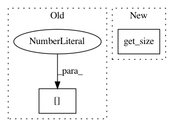

cdf1bcc87bfb961bd7976675014ab2dd3f88c421,tests/utils/test_model.py,TestDecoderModel,forward,#TestDecoderModel#Any#,43
Before Change
output = torch.randn(1, 9491)
if t == timesteps - 1:
output = torch.ones(1, 9491) * -30
output[0][2] = 10
finish, data, batch_size_t = decoder.decode(t, data, output)
if finish:
break
After Change
output = torch.randn(batch_size_t, self.vocab.get_size())
if t == timesteps - 1:
// manually add EOS to the first example.
output = torch.ones(batch_size_t, self.vocab.get_size()) * -30.0
output[0, self.vocab.EOS_INDEX] = 10
finish, data, batch_size_t = decoder.decode(t, data, output)
if finish:
In pattern: SUPERPATTERN
Frequency: 3
Non-data size: 2
Instances
Project Name: facebookresearch/pythia
Commit Name: cdf1bcc87bfb961bd7976675014ab2dd3f88c421
Time: 2020-09-14
Author: vedanuj@fb.com
File Name: tests/utils/test_model.py
Class Name: TestDecoderModel
Method Name: forward
Project Name: hyperopt/hyperopt
Commit Name: 6697ca1095588c8525c1b85e483ac3a9af3071c8
Time: 2011-10-22
Author: dyamins@gmail.com
File Name: hyperopt/gdist.py
Class Name: gGauss
Method Name: theano_sampler_helper
Project Name: hyperopt/hyperopt
Commit Name: 6697ca1095588c8525c1b85e483ac3a9af3071c8
Time: 2011-10-22
Author: dyamins@gmail.com
File Name: hyperopt/gdist.py
Class Name: gUniform
Method Name: theano_sampler_helper